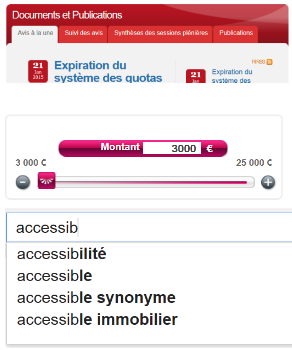

Introduction - cas utilisateur
De plus en plus les pages web se retrouvent enrichies de composants applicatifs complexes : fenêtre de dialogue, menu, système d'onglets, slider… Ces derniers sont destinés à créer de véritables applications web contrôlées par JavaScript. Pour certains utilisateurs, plus particulièrement les aveugles qui se servent d’un lecteur d'écran et les handicapés moteurs qui ne peuvent pas employer de souris, ces nouveaux composants peuvent poser des problèmes complexes.
L'API ARIA a été spécifiquement conçue pour rendre ces composants accessibles et utilisables par tous. Elle propose notamment des « motifs de conception » qui décrivent très précisément l'implémentation et le comportement au clavier que doivent adopter ces composants.
Lorsqu'il existe un « motif de conception », une grande partie du travail consiste à vérifier que celui-ci est scrupuleusement respecté. Lorsqu'il n'en existe pas, il faut s'assurer le composant ou la fonctionnalité est parfaitement accessible à tous.
Compatibilité des composants et fonctionnalités JavaScript
S'agissant des composants développés avec JavaScript et des fonctionnalités associées, deux cas de figure peuvent se présenter.
Composant correspondant à un « motif de conception » ARIA
Imaginons l'implémentation d'une fenêtre de dialogue modale. Cela correspond au motif de conception dialog. Le motif de conception est assez simple à décrire :
- le composant doit posséder un rôle
role="dialog" ;
- le composant doit être identifié avec une propriété
aria-label ou aria-labelledby ;
- lorsque le composant est activé, le focus doit être transmis au premier élément interactif (qui peut prendre le focus) de la fenêtre ;
- tant que le composant est actif, la navigation par la tabulation doit être circonscrite à l'intérieur du composant et ne doit jamais atteindre les autres éléments interactifs de la page ;
- la navigation par tabulation doit être circulaire dans le composant : ce qui veut dire que lorsque le dernier élément est atteint, la tabulation suivante active le premier et inversement ;
- la méthode de fermeture, généralement un bouton, doit être activable avec la touche ESC ;
- lorsque le composant est fermé, le focus doit être rendu au composant ayant permis de l'ouvrir.
Vous pouvez trouver les détails de ce motif de conception dans la documentation ARIA : Dialog (Modal).
Dans ce cas de figure, le motif de conception est connu. Il faut vérifier que l'implémentation ARIA (présence et pertinence des propriétés ARIA requises) et le comportement au clavier sont conformes à ce qui est prévu.
Pour le comportement au clavier qui peut être particulièrement complexe, le RGAA réduit l'exigence à un certain nombre de touches de base : TAB, ESC, ESPACE; ENTRÉE et les touches de direction HAUT, BAS, DROITE, GAUCHE.
Après s'être assuré de la conformité du motif de conception, il faut tester que la restitution est correcte avec les lecteurs d'écran en utilisant une base de référence de test.
La base de référence est un jeu de combinaisons associant un lecteur d'écran, un navigateur et un système d'exploitation représentatifs des usages sur le terrain pour la majorité des utilisateurs.
À titre d'exemple, voici la base de référence la plus utilisée dans les cas communs, elle couvre environ 80% des situations :
- NVDA + Firefox + Windows
- JAWS + IE + Windows
- Voice Over + Safari + MacOS
D'autres combinaisons sont disponibles et vous pouvez ajouter des combinaisons particulières en fonction des contraintes d'utilisation de votre application. La description de la base de référence est disponible dans le RGAA : base de référence. Vous noterez que des contraintes supplémentaires complètent les combinaisons.
Les tests sur la base de référence sont indispensables.
Au-delà du motif de conception ARIA, le composant peut être affecté d'autres comportements, enrichi de propriétés ARIA complémentaires ou interagir avec d'autres composants de la page, ce qui pourrait perturber la restitution.
Une fois l'ensemble de ces tests effectués, vous pourrez considérer que le composant est « compatible avec l'accessibilité ».
Ces tests qui peuvent sembler très contraignants sont facilités par l'utilisation de bibliothèques de composants, prêts à l'emploi, qui implémentent déjà les motifs de conception ARIA.
Dans le cadre de ses ressources, le RGAA propose une étude très complète de plusieurs bibliothèques communément utilisées avec, si nécessaire, les corrections à effectuer : Tutoriel "composants d’interface JavaScript".
Cas d'un composant non conforme
Dans le cas où il n'est pas possible de rendre un composant conforme, souvent du fait de limitations de la bibliothèque utilisée, vous devrez proposer une alternative pertinente qui permette à l'utilisateur d'accéder aux mêmes contenus et à des fonctionnalités similaires.
Cette alternative peut être un autre composant conforme ou une méthode qui ne requiert pas JavaScript pour fonctionner. Par exemple : un champ de saisie à la place d'un datepicker ou même un lien vers une version de la page fonctionnelle sans les composants en cause.
Accès au clavier et à la souris
La dernière chose à vérifier est l'accessibilité au clavier de tous les composants implémentés dans votre page.
Lorsque le composant correspond à un motif de conception, l'accessibilité au clavier est prise en charge par le motif de conception lui-même.
En revanche, quand ce n'est pas le cas, il faut vérifier que les éléments déclenchant une action sont accessibles avec la touche de tabulation et activables avec la touche ENTRÉE au moins.
Technique pour rendre un élément accessible au clavier
Lorsque un élément ne peut pas nativement recevoir le focus de tabulation (ce qui le rend inutilisable au clavier), il est possible de forcer ce comportement avec l'attribut tabindex="0".
Cependant attention, si cela suffit pour le rendre accessible au clavier, cela peut rester insuffisant, notamment si cet élément se comporte comme un bouton HTML..
Dans ce cas, le motif de conception button devra vraisemblablement être utilisé. Ce motif prévoit par exemple que le composant soit activable avec la touche ENTRÉE et la touche ESPACE.
Une autre solution qui doit être privilégiée est d'employer l'élément <button> qui vous déchargera de toute la gestion au clavier.
Cas des liens (a href ou a) utilisés comme bouton
Une très mauvaise habitude de développement est d'utiliser un lien <a href="#"> ou une ancre a dépourvue d'attribut href pour simuler un bouton d'action.
Cette pratique pose deux problèmes :
- dans le cas de l'utilisation d'une ancre, l'élément est inutilisable au clavier puisqu'une balise
a sans attribut href ne peut pas recevoir le focus à moins d'y ajouter un attribut tabindex="0".
- qu'il s'agisse d'une ancre ou d'un lien, le lecteur d'écran annoncera cet élément comme étant un lien. L'utilisateur s'attendra donc à atteindre une autre page/ressource ou un autre contenu dans la page, mais certainement pas à une ouverture de fenêtre modale par exemple.
Vous devez impérativement réserver l'utilisation des liens à l'affichage d'une ressource extérieure, une autre page, une fonctionnalité de mise à jour dans la page ou un lien vers une ancre.
Dans tous les autres cas il faut utiliser un bouton, c'est-à-dire un élément <button> ou le motif de conception button.
Ceci est très important pour que l'utilisateur, qui ne voit pas la page, puisse faire la différence, en restitution, entre l'affichage d'une autre page et l'affichage d'une zone dans la page (ouverture d'une fenêtre modale par exemple).
Le motif de conception button est très simple :
- le composant doit avoir un rôle
button ;
- le composant doit avoir un attribut
tabindex="0" ;
- le composant doit être activable avec la touche
ENTRÉE et ESPACE ;
Il peut permettre de réparer rapidement une simulation de bouton via un lien (ou tout autre élément) en prenant en charge le comportement du bouton avec JavaScript :
<a href="#" role="button" >faux bouton</a>
<a role="button" tabindex="0">faux bouton</a>
<img src="image.png" alt="faux bouton" role="button" tabindex="0"/>
L'idéal étant d'utiliser des éléments natifs comme <button> ou <input type="button"> par exemple.